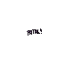

As torres de forja
Use uma das torres para abrir a Exaltation Forge e acessar as opções de fusão, transferência e conversão de recursos.
O que cada equipamento recebe
Regras do Avalorium. As tabelas desta página usam os valores customizados fornecidos para o servidor. No Avalorium, Amplification das botas aumenta o Onslaught da arma.

ArmasOnslaught
Chance de ativar um hit fatal com a arma.
Ruse
Chance de esquivar de um ataque (dodge).
Momentum
Chance de reduzir o cooldown das magias.
Transcendence
Chance de ativar o avatar da vocação.
Amplification
Amplifica o Onslaught da arma. Não é uma chance independente de ativação.
Classificação e limite
A classificação do equipamento determina até onde ele pode evoluir: classificação 1 → Tier 1; classificação 2 → Tier 2; classificação 3 → Tier 3; classificação 4 → Tier 10.
Bônus de cada tier
Valores para equipamentos evoluídos, arredondados para duas casas decimais. Na coluna de botas, leia o percentual como amplificação do Onslaught.
| Tier | Arma Onslaught |
Armadura Ruse |
Capacete Momentum |
Pernas Transcendence |
Botas Amplification |
|---|---|---|---|---|---|
| Tier 1 | 0,74% | 0,90% | 2,00% | 0,50% | 2,50% |
| Tier 2 | 1,40% | 1,84% | 4,00% | 1,03% | 5,40% |
| Tier 3 | 2,18% | 2,83% | 6,40% | 1,61% | 9,10% |
| Tier 4 | 3,08% | 3,89% | 9,20% | 2,24% | 13,60% |
| Tier 5 | 4,10% | 5,01% | 12,40% | 2,92% | 18,90% |
| Tier 6 | 5,24% | 6,19% | 16,00% | 3,65% | 25,00% |
| Tier 7 | 6,50% | 7,44% | 20,00% | 4,43% | 31,90% |
| Tier 8 | 7,88% | 8,74% | 24,40% | 5,26% | 39,60% |
| Tier 9 | 9,38% | 10,11% | 29,20% | 6,15% | 48,10% |
| Tier 10 | 11,00% | 11,53% | 34,40% | 7,08% | 57,40% |
Exemplo: arma Tier 10 tem 11,00% de Onslaught e botas Tier 10 dão 57,40% de Amplification. Juntas: 11 × (1 + 57,40 / 100) = 17,314% de Onslaught efetivo (17,31% arredondado).
Fusão e uso do Exalted Core
Combine dois equipamentos iguais e do mesmo tier para tentar evoluir. Deixe Convergence desmarcada. O segundo item é consumido no sucesso, salvo um bônus de preservação.
- Prepare os equipamentos e os recursos. A fusão regular do Avalorium custa 100 dust; a convergence fusion custa 130 dust. Consulte o ouro por tier na tabela abaixo.
- Escolha a chance adicional. O core de chance adiciona 15 pontos percentuais à chance base de 50%, chegando a 65%.
- Considere a proteção. Sem proteção, uma falha perde 1 tier no segundo item. O core de proteção dá 50% de chance de evitar essa perda.
| Fusão | Chance |
|---|---|
| Sem exalted core | 50% |
| Com exalted core (+15%) | 65% |
| Falha: perda de 1 tier no 2º item | sempre, se não usar proteção |
| Core de proteção (tier loss reduction) | 50% de não perder o tier |
Chance e proteção são funções distintas. A proteção não garante o sucesso da fusão; ela atua sobre a perda de tier em caso de falha.
Fusão com Convergence
Marque Convergence na aba Fusion para usar esta modalidade. O exemplo mostra a combinação de equipamentos diferentes para aumentar o tier do item.
- Somente classificação 4: a janela limita esta modalidade aos equipamentos dessa classificação.
- 100% de sucesso: a convergence fusion não usa a chance de 50% da fusão normal.
- Sem bônus extras: os resultados extras da fusão normal não se aplicam à convergence fusion.
- 130 dust e ouro: o exemplo para Tier 1 exige 55.000.000 de ouro. Consulte os demais tiers na tabela de custos.
Portable Exaltation Forge
O Portable Exaltation Forge permite usar a mecânica de forja de qualquer lugar, sem precisar se deslocar até as torres. Na Store, encontre o item em Avalorium Custom → Portables.
Auto Forja no FabioRockeiroBOT
O painel Auto Forja do FabioRockeiroBOT automatiza o aumento da capacidade máxima de Dust e a geração de Slivers e Exalted Cores. Abra a opção Forja e ative as funções desejadas.
Download do FabioRockeiroBOT ↗O link leva à página Fábio Rockeiro Scripts, no menu Scripts Zerobot, com o arquivo para download e as instruções de instalação.
Bônus extras ao obter sucesso
Depois de uma fusão bem-sucedida, pode ocorrer um resultado extra. Os percentuais abaixo se referem ao bônus no sucesso, não à chance de sucesso da tentativa.
| Resultado | Faixa | Chance |
|---|---|---|
| Nenhum bônus | 0–7399 | 74,00% |
| Não consome dust | 7400–8999 | 16,00% |
| Não consome cores | 9000–9499 | 5,00% |
| Não consome gold | 9500–9524 | 0,25% |
| Mantém o 2º item, −1 tier | 9525–9549 | 0,25% |
| Mantém o 2º item, mesmo tier | 9550–9949 | 4,00% |
| Mantém o 2º item, +1 tier | 9950–9974 | 0,25% |
| Ganha +2 tiers de uma vez | 9975–10000 | 0,25% |
Faixas e percentuais reproduzidos da referência customizada. Ela informa roll de 0 a 10000; os percentuais são os publicados, sem recálculo a partir dos limites inclusivos.
Custos da classificação 4
Valores de ouro para fusão regular, convergence fusion e convergence transfer, além dos cores de transferência, conforme a referência do Avalorium.
| Fusão | Ouro regular | Cores na transferência | Convergence fusion | Convergence transfer |
|---|---|---|---|---|
| 0 → 1 | 8.000.000 | 1 | 55.000.000 | 65.000.000 |
| 1 → 2 | 20.000.000 | 2 | 110.000.000 | 165.000.000 |
| 2 → 3 | 40.000.000 | 5 | 170.000.000 | 375.000.000 |
| 3 → 4 | 65.000.000 | 10 | 300.000.000 | 800.000.000 |
| 4 → 5 | 100.000.000 | 15 | 875.000.000 | 2.000.000.000 |
| 5 → 6 | 250.000.000 | 25 | 2.350.000.000 | 5.250.000.000 |
| 6 → 7 | 750.000.000 | 35 | 6.950.000.000 | 14.500.000.000 |
| 7 → 8 | 2.500.000.000 | 50 | 21.250.000.000 | 42.500.000.000 |
| 8 → 9 | 8.000.000.000 | 60 | 50.000.000.000 | 100.000.000.000 |
| 9 → 10 | 15.000.000.000 | 85 | 125.000.000.000 | 300.000.000.000 |
A coluna “Fusão” identifica a progressão da linha na referência fornecida. Os cores de transferência são reproduzidos na mesma ordem; ela não detalha o tier de origem e destino das transferências.
Transferência de tiers
A transferência permite passar tiers entre equipamentos. O arquivo customizado informa os custos acima, mas não detalha os requisitos, a perda de tier nem as chances das modalidades de transferência. Confira essas condições na janela da forja antes de confirmar a operação.
Como os bônus são calculados
Para tiers de 1 a 10, a fórmula é a × tier² + b × tier + c. Os coeficientes informados para o servidor são:
- Onslaught: 0,06t² + 0,48t + 0,20
- Ruse: 0,0307576t² + 0,8432t + 0,026
- Momentum: 0,2t² + 1,4t + 0,4
- Transcendence: 0,025t² + 0,456t + 0,0161
- Amplification: 0,4t² + 1,7t + 0,4
Onslaught efetivo = Onslaught × (1 + Amplification / 100).
Valores customizados: referência forge-tiers.html fornecida pela equipe do Avalorium. Ícone Exalted Core e animações de habilidades: Tibia Wiki — Exaltation Forge. A referência global serve de apoio visual e explicação da fusão; os números desta página seguem o servidor.